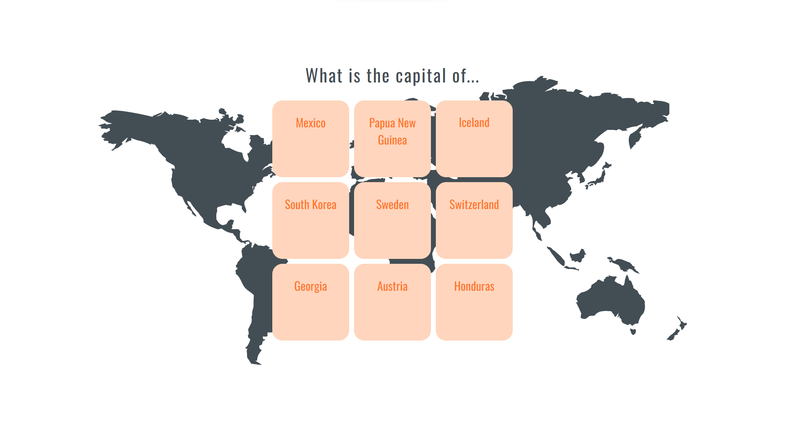
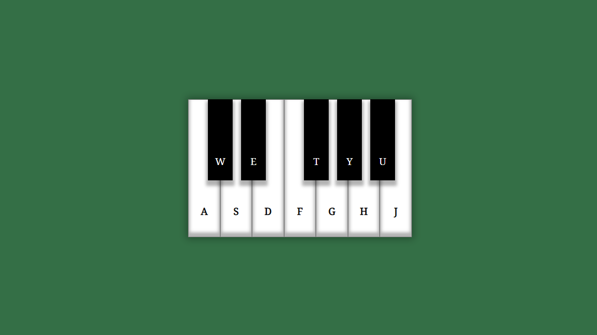

About me
Hi, I'm Kate Raevskaia. I've been a junior front-end developer for 5 months now. For me, programming not just a job, it's a hobby. I'm open to new knowledge, I like to study new technologies and apply them in practice.
Skills: HTML, CSS, JS, React.
Portfolio

Flashcards

Virtual Piano
Contacts
You can contact me at raevskayakatay1707@gmail.com